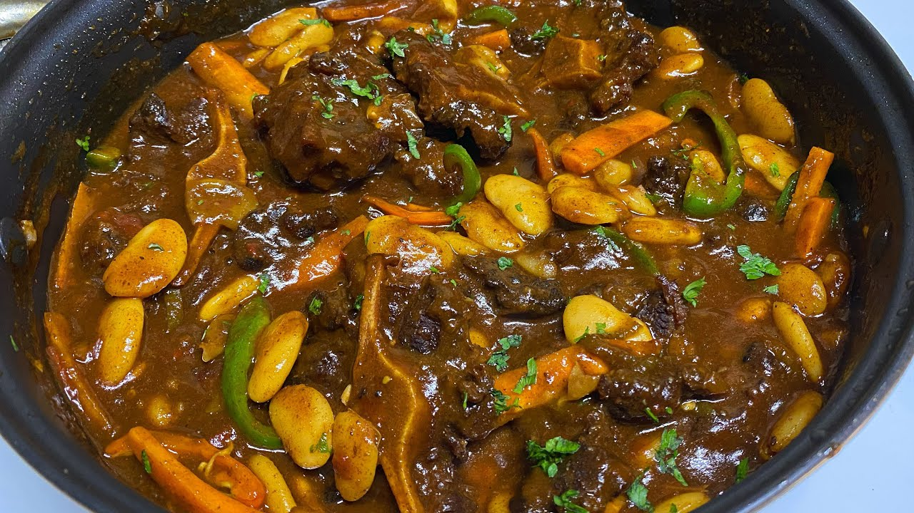

Homepage
Jamaican Oxtail Stew

Description
Jamaican Oxtail Stew is out-of-this-world delicious oxtails braised with butter beans
in a flavorful deep gravy spiced up with allspice, thyme, curry, Scotch bonnet pepper,
Worcestershire sauce, and browning sauce. It's fall-off-the-bone tender and a must-have
on your fall and winter rotation!
Ingredients
- 2 lbs Oxtail
- 1 tbsp all-purpose seasoning
- 1 tsp Salt
- 1 tsp Browning
- 1 Maggi stock cube
- 2.5 ozBell pepper
- ½ Scotch bonnet pepper
- 1.8 oz Onion
- 1 beef stock cube
- 2.1 oz Tomato
Steps
- Wash the oxtail in water with vinegar and lime juice.
- Season the oxtail with salt, all-purpose seasoning
- Add the cooking oil and the brown sugar to a pressure cooker pot on high heat.
- Make the oil hot and the sugar melt, then add the oxtail. Sear the meat so that all sides are brown.
- Add 2 ½ cups of water to the pressure cooker, close with the pressure cooker lid and cook at high pressure for 30-35 minutes.
- Make sure the pressure cooker cool off, then carefully remove the lid. Check that the meat is soft and falling off of the bone.
- Put to continue cooking on medium-high heat. Add the onion, thyme, scallion, tomato, bell pepper, butterbean, ketchup and Maggi stock cube.
- Cover the pot with a normal pot cover and let it cook for another 30 minutes.